대만 산악사고 및 고위험 환경 사례와 구조 방법
掃描加入互動
投票・匿名提問
QR 스캔 → 투표·익명 질문 참여
산들의 섬, 대만
海拔 3,000 公尺以上的高山해발 3,000m 이상의 고봉 268개
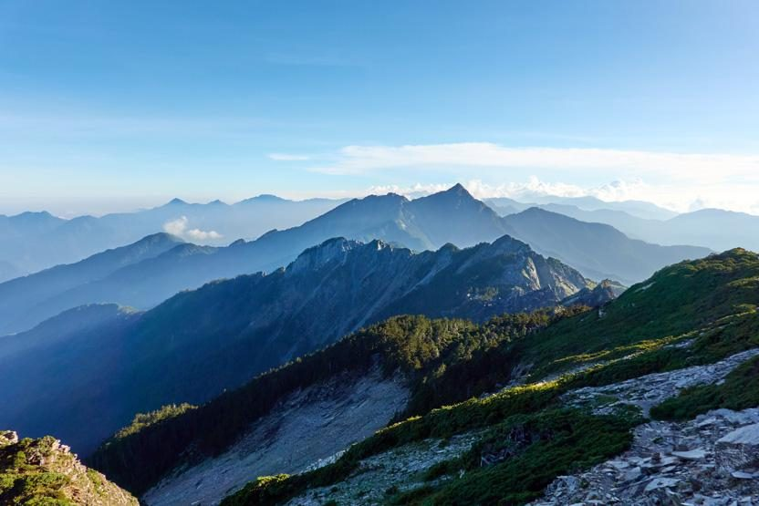
TAIWAN · 3,000 m+YOUTUBE.V1影片截取於《齊柏林看見台灣十週年》影片，以及《群山之島與不去會死的他們》第一集。영상 출처: 《齊柏林看見台灣十週年》 영상 및 《群山之島與不去會死的他們》 제1화에서 발췌
在台灣山域事故中，
人數最多的原因是？
대만 산악사고에서 가장 많은 원인은 무엇일까요?
휴대폰으로 QR 코드를 스캔해 투표하세요
산악사고 추세 — 여전히 높은 수준 유지
山林開放政策＋疫情帶動國內旅遊
사고 급증 — 산림 개방 정책·코로나19로 국내 여행 증가
疫情三級警戒、入山管制
일시 감소 — 방역 3단계 경계·입산 통제
每年仍有 700 人以上受困、受傷
높은 수준 지속 — 방역 해제 후에도 매년 700명 이상 고립·부상
資料來源：消防署山域事故救援管理平台（114 年 8 月 2 日下載）；2025 年統計至 7 月。僅代表案件數與人數，無法代表發生比例。자료: 대만 소방서 산악사고 구조관리 플랫폼(2025.8.2 기준), 2025년은 7월까지. 건수·인원 기준이며 발생률을 의미하지 않음.
사고 원인의 절반 가까이가 '길 잃음'
提升定位裝備與技能、增設防迷措施；事故由高山轉向中級山及郊山
위치 확인 장비·기술 강화, 길 잃음 방지 시설 확충 — 사고가 고산에서 중간 고도의 산·근교산으로 이동
關注高齡族群、直升機易被動用；宣導安全觀念、技能及體能訓練
고령층 주목, 헬기 출동이 잦음 — 안전 의식·기술·체력 훈련 홍보
以發生人數計，104–113 年（2015–2024）。點選右側排名可對照圓餅圖。資料來源：山域事故原因統計及質性分析。발생 인원 기준, 2015–2024년. 자료: 산악사고 원인 통계 및 질적 분석.
YOUTUBE.V2影片截取於 TVBS 新聞與真實搜救畫面。영상 출처: TVBS 뉴스 및 실제 수색구조 현장 영상에서 발췌
찾기 어렵고 · 도달하기 어렵고 · 구조하기 어렵다
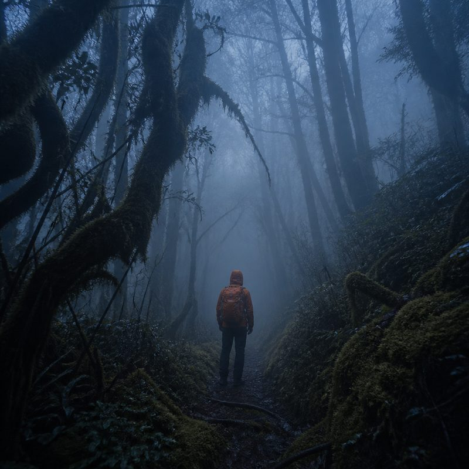
民眾知能不足，行蹤難以掌握등산객의 지식·역량 부족 · 행적 파악 곤란
對策｜第一時間掌握與策略派遣，降低動員人力초기 파악·전략적 출동 → 동원 인력 절감
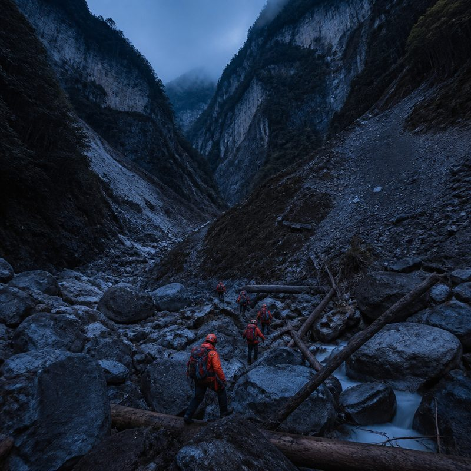
山域地形崎嶇，行進多生延遲험준한 지형 · 잦은 이동 지연
對策｜輕量化裝備與適時引導，加速動員效率경량화 장비·적시 유도 → 출동 효율 향상
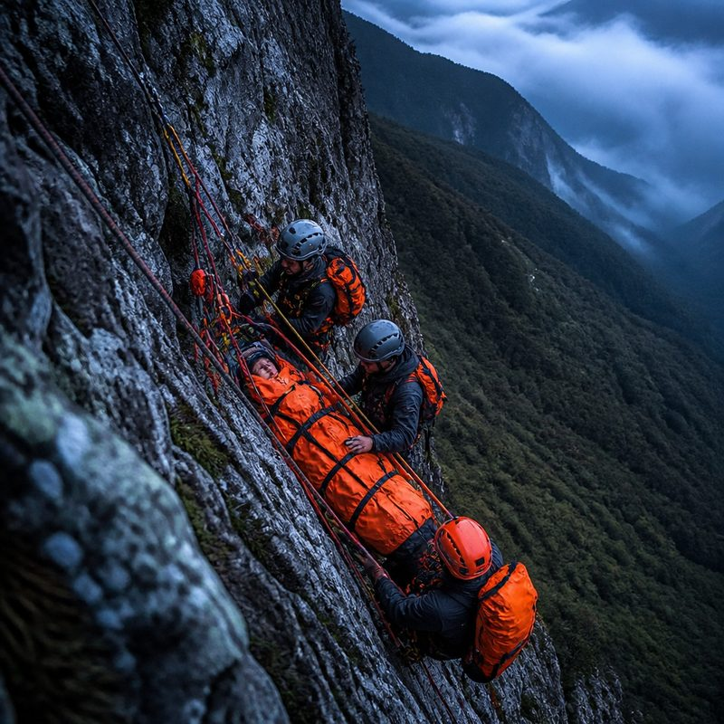
事故地點困難，尚待技術提升사고 지점 접근 곤란 · 기술 향상 필요
對策｜規律訓練、研討及策進，推動山域救援專業化정기 훈련·연구·개선 → 산악구조 전문화
복합 산악구조 역량 — 6대 핵심 기술
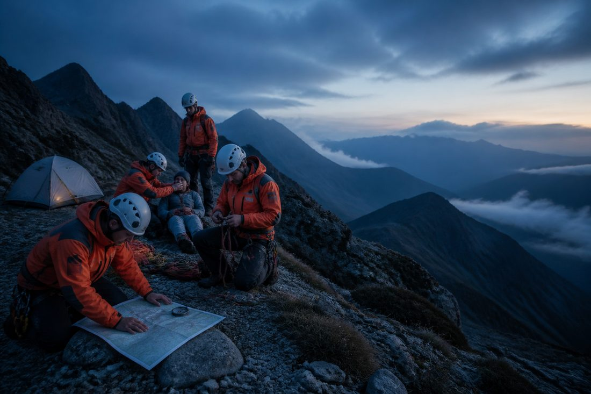
MoRE · 6 SKILLS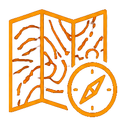
지도 판독·수색 분석
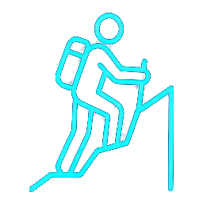
험지 통과
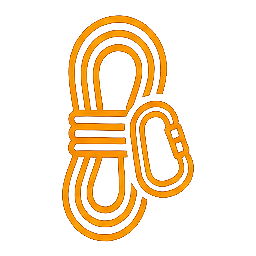
팀 로프 기술
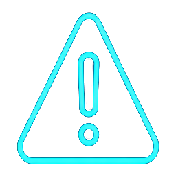
긴급 상황 대처
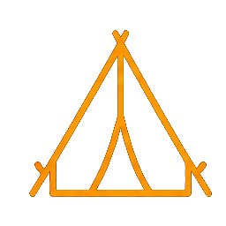
야영지 정비
야외 응급처치
가장 큰 과제: '찾기 어려움'
迷路佔事故近半 → MoRE 發展出 六種搜索手法，把搜索範圍從「整座山」縮小到「熱區」길 잃음이 사고의 절반 가까이 → MoRE는 6가지 수색 기법으로 수색 범위를 '산 전체'에서 '핫존(집중 수색 구역)'으로 좁힙니다
Google Map／Apple 地圖／LINE／App／簡訊／網頁定位
유도식 휴대폰 위치 확인
運用 Android／iPhone「尋找裝置」功能
분실 휴대폰 찾기 기능 활용
社群平台、網路瀏覽紀錄、照片 EXIF 資訊
정보 수집 — SNS·인터넷 기록·사진 EXIF
手機握手紀錄 → 視域分析 → 熱區限縮
기지국 접속 기록 → 가시권 분석 → 핫존 축소
迷途者手機截圖 → Google Earth 套圖
조난자 화면 캡처 → Google Earth 중첩 위치 확인
迷途者的照片／影片 ↔ 地圖，限縮熱區
조난자 사진·영상 ↔ 지도 대조로 핫존 축소
유도식 휴대폰 위치 확인 — 조난자가 직접 좌표를 보내도록 안내
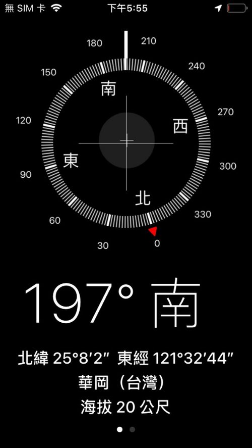
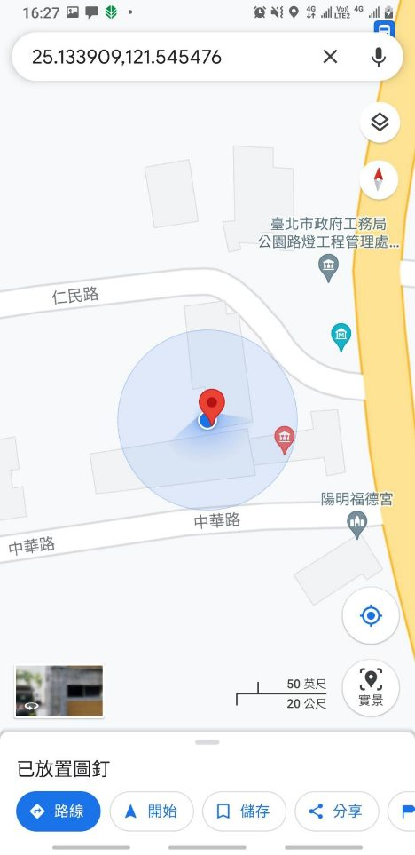
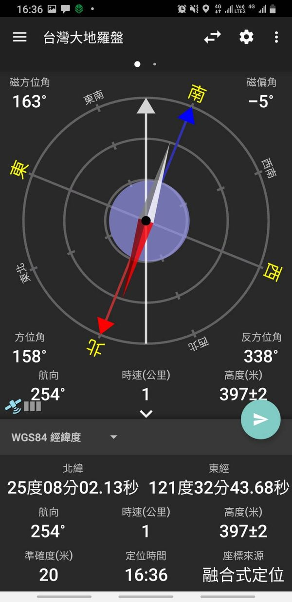
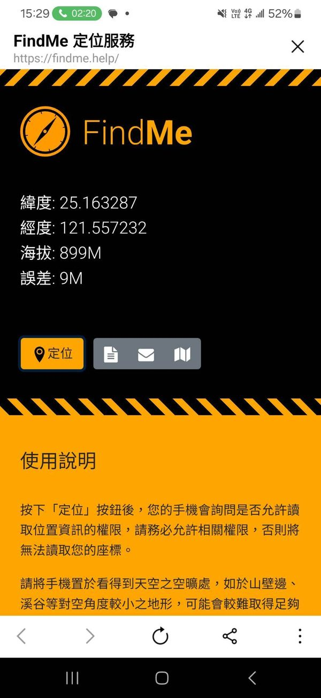
통신 신호 가시권(Viewshed) 분석으로 수색 범위 축소
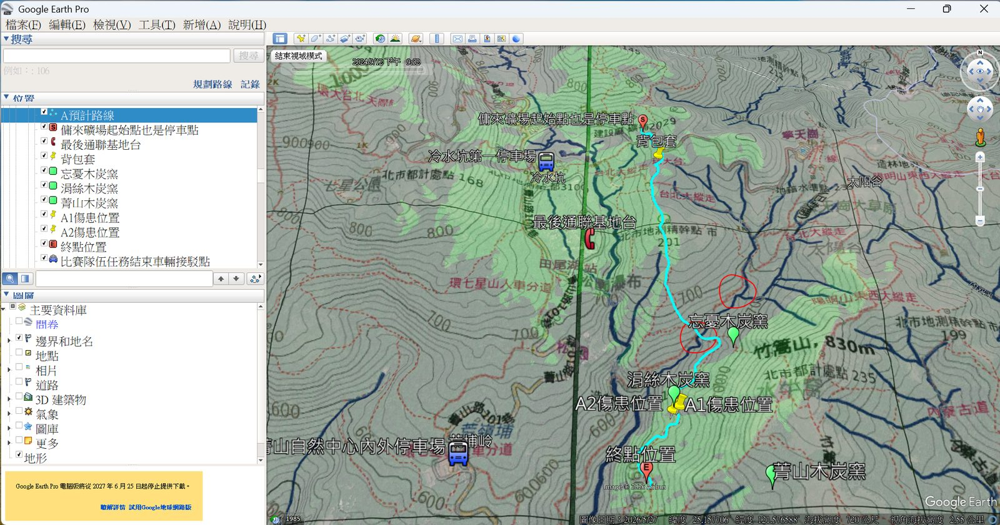
CASE · GOOGLE EARTH手機只要與基地台「握手」，就代表它位在看得見該基地台的坡面上。把視域與可能路線疊合，就能在地圖上圈出搜索熱區。휴대폰이 기지국에 접속했다면 그 기지국이 '보이는' 사면에 있었다는 뜻입니다. 가시권과 예상 경로를 겹치면 지도에서 수색 핫존을 좁힐 수 있습니다.
조난자 사진과 현장·지도 대조로 위치 추정
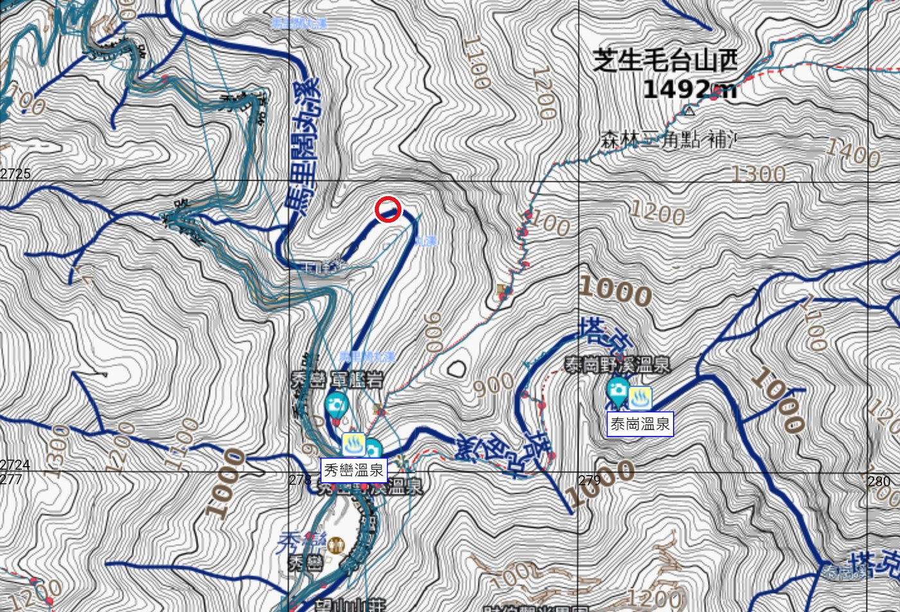
TOPO MAP · 熱區 핫존사진 또는 현장 비교를 통해 지형·지세 판독
계곡선 및 하천 흐름 방향과 원근감을 이용한 위치 판단
능선 형태와 하늘 개방 정도를 활용한 위치 판단
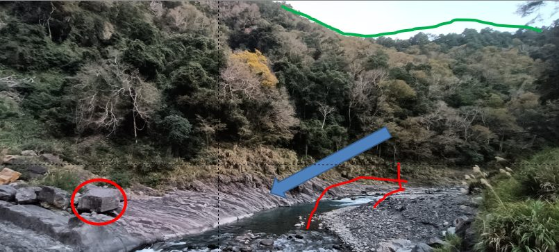
PHOTO 1야외 응급처치 평가 시스템(PAS)
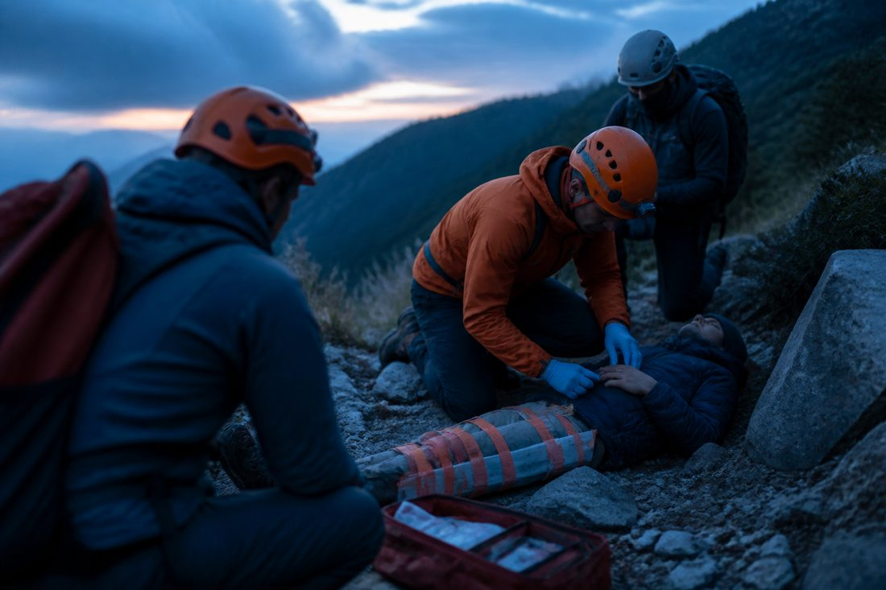
PATIENT ASSESSMENT人數、機轉、風險현장 평가 — 인원·손상 기전·위험
穩定傷患：循環／呼吸／中樞神經1차 평가 — 환자 안정화 (순환·호흡·중추신경)
完成治療並準備交接2차 평가 — 처치 완료 및 인계 준비
＊亦認同其他評估系統。點選各層級展開細項。 · 다른 평가 체계도 인정합니다.
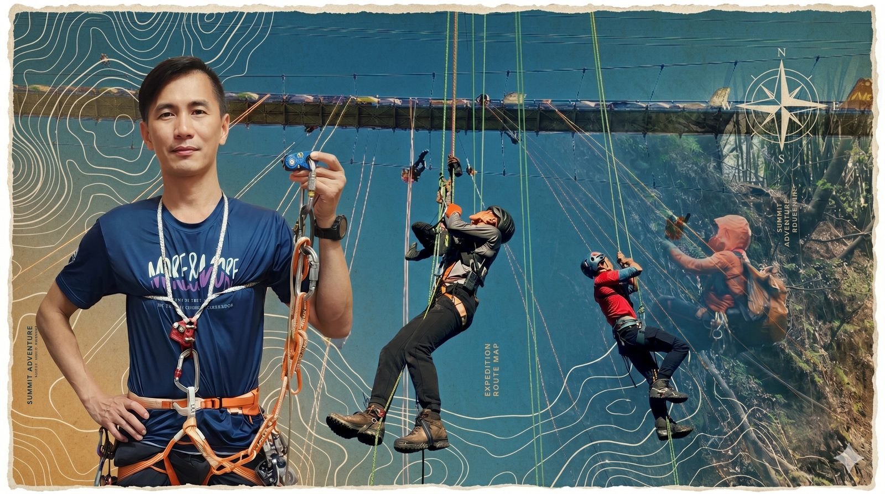
PERSONAL KIT개인 장비(헬멧 포함) 1.3kg으로 고효율 로프 등강·하강 완성
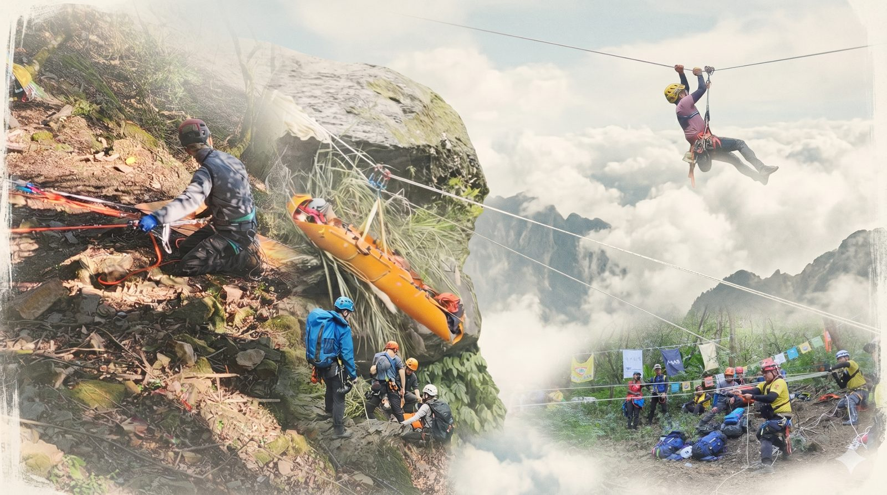
TEAM ROPE RESCUE5인 팀, 1인당 기술 장비 2.4kg으로 고효율 로프 구조 완성
團體裝備僅需要攜帶符合隊伍戰術使用的繩索以及捲式擔架팀 공용 장비는 팀 전술에 맞는 로프와 SKED 들것만 준비하면 됩니다
경량화 장비 구성 — 수색구조대원 개인 장비
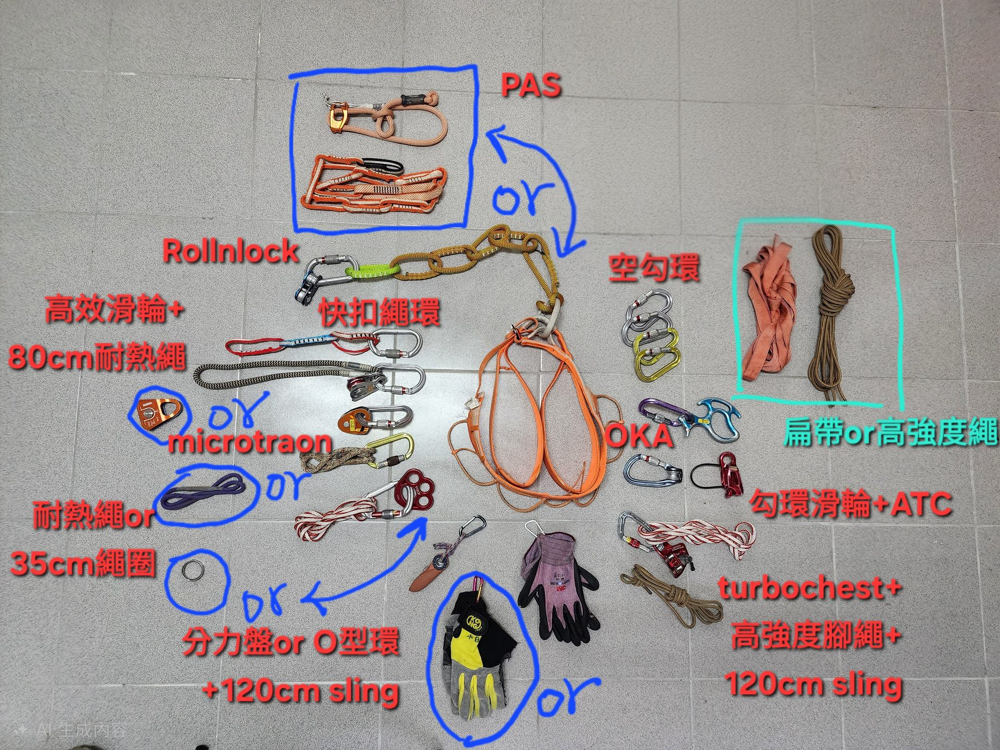
CLICK TO ZOOM含岩盔、吊帶；未計入公裝主繩。헬멧·하네스 포함, 팀 공용 주 로프 제외
경량화 원칙과 개인 경량화의 핵심 개념
불필요한 장비는 가져가지 않는다
하나의 장비, 여러 용도
같은 기능이면 더 가벼운 것
개인 등강·하강 = 홀링 시스템 인양·하강 (교육: 새 기술을 배우며 기존 기술 복습)
모듈형 장비 하나로 개인·팀 장비 겸용
동일한 장비 배치·용어·팀워크 (오른쪽: 개인, 왼쪽: 구조)
YOUTUBE.V3경청해 주셔서 감사합니다 · 질문은 왼쪽 질문 게시판에 남겨 주세요